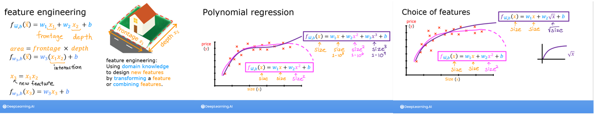

Feature scaling, learning rate & feature engineering
Những kỹ thuật “nhỏ” nhưng quyết định gradient descent chạy trong vài giây hay vài giờ, và mô hình tuyến tính có vẽ được đường cong hay không.
Vấn đề: đặc trưng chênh lệch thang đo
Trong dữ liệu nhà, diện tích nằm trong khoảng 300–2000 còn số phòng ngủ chỉ 0–5. Đường đồng mức của \(J\) khi đó là những elip rất dẹt. Gradient descent sẽ đi zíc-zắc qua lại theo chiều hẹp, tiến rất chậm theo chiều dài.
Lab03 cho thấy rõ: với dữ liệu thô, α = 9.9e-7 làm J dao động, α = 9e-7 hội tụ chậm, α = 1e-7 hội tụ nhưng rất chậm. Không có α nào “tốt” cho mọi chiều cùng lúc.
Các cách chuẩn hoá
| Phương pháp | Công thức | Khoảng giá trị |
|---|---|---|
| Chia cho max | \(x_j / \max(x_j)\) | \([0, 1]\) nếu \(x \ge 0\) |
| Mean normalization | \(\dfrac{x_j - \mu_j}{\max - \min}\) | khoảng \([-1, 1]\) |
| Z-score | \(\dfrac{x_j - \mu_j}{\sigma_j}\) | trung bình 0, độ lệch chuẩn 1 |
def zscore_normalize_features(X):
mu = np.mean(X, axis=0) # (n,)
sigma = np.std(X, axis=0) # (n,)
X_norm = (X - mu) / sigma # broadcasting
return X_norm, mu, sigmaSau khi chuẩn hoá, Lab03 chạy với α = 0.1 và chỉ cần vài trăm vòng lặp để hội tụ — thay vì không bao giờ tới đích.
Khi dự đoán cho dữ liệu mới, phải chuẩn hoá nó bằng đúng μ, σ của tập huấn luyện, không tính lại trên dữ liệu mới:
x_house = np.array([1200, 3, 1, 40])
x_house_norm = (x_house - X_mu) / X_sigma
price = np.dot(x_house_norm, w_norm) + b_normTương tự với tập validation/test (chương 11): chỉ fit scaler trên train, rồi transform các tập còn lại. Nếu tính μ, σ trên toàn bộ dữ liệu, thông tin của tập test sẽ “rò” vào mô hình (data leakage).
Chọn learning rate
- Vẽ learning curve J theo số vòng lặp. J phải giảm sau mỗi vòng.
- Thử dãy α tăng gấp ~3 lần: 0.001, 0.003, 0.01, 0.03, 0.1, 0.3, 1… Chọn giá trị lớn nhất mà J vẫn giảm đều, hoặc hơi nhỏ hơn.
- Automatic convergence test: dừng khi J giảm ít hơn ε (ví dụ \(10^{-3}\)) sau một vòng. Thực tế nhìn đồ thị thường đáng tin hơn chọn ε.
Feature engineering
Đặc trưng tốt thường quan trọng hơn thuật toán tốt. Feature engineering là dùng hiểu biết về bài toán để tạo đặc trưng mới, bằng cách biến đổi hoặc kết hợp đặc trưng cũ. Ví dụ kinh điển: từ chiều mặt tiền \(x_1\) và chiều sâu \(x_2\) của lô đất, tạo đặc trưng diện tích \(x_3 = x_1x_2\).

Hồi quy đa thức
Mô hình tuyến tính có thể vẽ đường cong nếu ta đưa vào các đặc trưng phi tuyến của \(x\):
x = np.arange(0, 20, 1)
y = x**2
X = np.c_[x, x**2, x**3] # ghép 3 cột đặc trưng
# Chưa chuẩn hoá: x^3 lên tới ~7000, phải dùng α rất nhỏ
model_w, model_b = run_gradient_descent_feng(X, y, iterations=10000, alpha=1e-7)
# w ≈ [0.08, 0.54, 0.03]: trọng số của x^2 lớn nhất
# Chuẩn hoá z-score: dùng được α = 0.1 và khớp gần như hoàn hảo
X = zscore_normalize_features(X)
model_w, model_b = run_gradient_descent_feng(X, y, iterations=100000, alpha=1e-1)Lab04 cho thấy gradient descent tự gán trọng số lớn cho đặc trưng phù hợp nhất. Với \(y = \cos(x/2)\) và đặc trưng tới \(x^{13}\), mô hình vẫn khớp được khá tốt — nhưng đây cũng là cửa ngõ dẫn tới overfitting (chương 7).
Scikit-learn
Trong thực tế, ta không tự viết gradient descent mà dùng thư viện. Lab05 và Lab06:
from sklearn.linear_model import SGDRegressor, LinearRegression
from sklearn.preprocessing import StandardScaler
scaler = StandardScaler()
X_norm = scaler.fit_transform(X_train) # z-score
sgdr = SGDRegressor(max_iter=1000) # gradient descent ngẫu nhiên
sgdr.fit(X_norm, y_train)
print(sgdr.coef_, sgdr.intercept_) # w, b
y_pred = sgdr.predict(X_norm)
linear_model = LinearRegression() # nghiệm đóng (normal equation)
linear_model.fit(X_train, y_train)Normal equation — nghiệm đóng
Riêng hồi quy tuyến tính có nghiệm chính xác không cần lặp. Thêm một cột toàn số 1 vào \(\mathbf{X}\) để gộp \(b\) vào \(\mathbf{w}\), khi đó:
| Gradient descent | Normal equation | |
|---|---|---|
| Cần chọn α | Có | Không |
| Số vòng lặp | Nhiều | Không lặp |
| Khi \(n\) lớn (≥ 10.000) | Vẫn tốt | Chậm: nghịch đảo ma trận \(n\times n\) tốn \(O(n^3)\) |
| Dùng cho mô hình khác | Mọi mô hình khả vi | Chỉ hồi quy tuyến tính |
- One-hot encoding cho biến phân loại (quận, màu sắc…): mỗi giá trị thành một cột 0/1. Không mã hoá “Q1=1, Q2=2, Q3=3” vì mô hình sẽ hiểu sai là Q3 “gấp ba” Q1. Chương 12 dùng one-hot cho cây quyết định.
- Biến đổi log cho biến lệch phải mạnh (thu nhập, giá nhà, lượt xem): \(\log(1+x)\) giúp phân phối cân đối hơn và giảm ảnh hưởng của giá trị cực lớn.
- Cây quyết định (chương 12) không cần feature scaling, vì nó chỉ so sánh ngưỡng trên từng đặc trưng.
sklearn.preprocessing.PolynomialFeatures(degree=d)tạo đặc trưng đa thức tự động — dùng trong lab C2_W3 (chương 11).
Đi từng bước qua lab
- Lab03 — nhìn dữ liệu. Vẽ giá theo từng đặc trưng (diện tích, phòng ngủ, tầng, tuổi): diện tích có ảnh hưởng rõ nhất.
- Thử ba learning rate trên dữ liệu thô. \(\alpha = 9.9\times10^{-7}\): chi phí dao động; \(9\times10^{-7}\): giảm nhưng chậm; \(1\times10^{-7}\): giảm đều nhưng rất chậm. Đồ thị cho thấy \(w_0\) (diện tích) dao động trong khi các \(w_j\) khác gần như đứng yên.
- Chuẩn hoá z-score.
zscore_normalize_featurestrả vềX_norm, mu, sigma; lab vẽ dữ liệu trước và sau để thấy mọi đặc trưng quanh 0. - Chạy lại với \(\alpha = 0.1\), 1000 vòng: hội tụ nhanh, dự đoán sát giá thật.
- Dự đoán nhà mới (1200 sqft, 3 phòng ngủ, 1 tầng, 40 năm) sau khi chuẩn hoá bằng
mu,sigmacủa tập train: khoảng 318 709 đô. - Lab04 — đặc trưng đa thức. Với \(y = 1 + x^2\), chỉ dùng \(x\) thì khớp kém; thêm \(x^2\) thì khớp tốt; thêm cả \(x, x^2, x^3\) thì gradient descent tự chọn \(x^2\).
- Lab05–06 — scikit-learn.
StandardScaler+SGDRegressor(gradient descent), rồiLinearRegression(normal equation) cho cùng kết quả.
Đặc trưng thô của một sản phẩm: giá (100.000 – 50.000.000 đồng), điểm đánh giá (1–5), số lượt xem (0 – 2 triệu). Thang đo lệch nhau cả triệu lần, nên phải chuẩn hoá trước khi chạy gradient descent. Feature engineering giúp nhiều hơn đổi thuật toán:
- Từ thời điểm đăng bán, tạo “giờ trong ngày”, “cuối tuần?”, “ngày lễ / ngày sale (11.11, 12.12)?”.
- Từ giá gốc và giá bán, tạo “% giảm giá”.
- Lượt xem lệch phải rất mạnh nên dùng \(\log(1 + \text{lượt xem})\).
df["discount_pct"] = 1 - df["sale_price"] / df["list_price"]
df["is_weekend"] = df["posted_at"].dt.dayofweek >= 5
df["log_views"] = np.log1p(df["views"])Từ ghi chú Notion
- Feature scaling: hướng tới khoảng giá trị “chấp nhận được” cho mỗi đặc trưng \(x_j\) (cỡ −1 đến 1); hai cách chuẩn hoá đã ghi là mean normalization và z-score normalization.
- Kiểm tra hội tụ: số vòng lặp cần thiết thay đổi rất nhiều theo bài toán: 30, 1.000, 10.000… nên luôn vẽ learning curve.
- Normal equation: chỉ dùng cho hồi quy tuyến tính; giải \(w, b\) không cần lặp; nhược điểm là không tổng quát cho thuật toán khác và chậm khi số đặc trưng lớn (> 10.000).
- Feature engineering: dùng trực giác để thiết kế đặc trưng mới bằng cách biến đổi hoặc kết hợp đặc trưng gốc.
Nguồn Notion: Regression and Classification
Ghi nhớ
- Chuẩn hoá z-score giúp gradient descent hội tụ nhanh hơn nhiều; luôn dùng μ, σ của tập train.
- Chọn α bằng cách thử dãy tăng ×3 và nhìn learning curve.
- Đặc trưng đa thức cho phép mô hình tuyến tính khớp đường cong.
Tự kiểm tra
Một đặc trưng có giá trị trong khoảng [−0.001, 0.001]. Có cần scale không?
Nên scale — khoảng quá nhỏ cũng gây vấn đề như khoảng quá lớn. Mục tiêu là các đặc trưng có thang đo tương đương nhau, quanh khoảng [−1, 1].
Dùng đặc trưng x, x², x³ với x từ 1 đến 1000 mà không scale, chuyện gì xảy ra?
x³ lên tới \(10^9\), lớn hơn x hàng triệu lần. Gradient descent gần như không thể hội tụ với bất kỳ α nào.